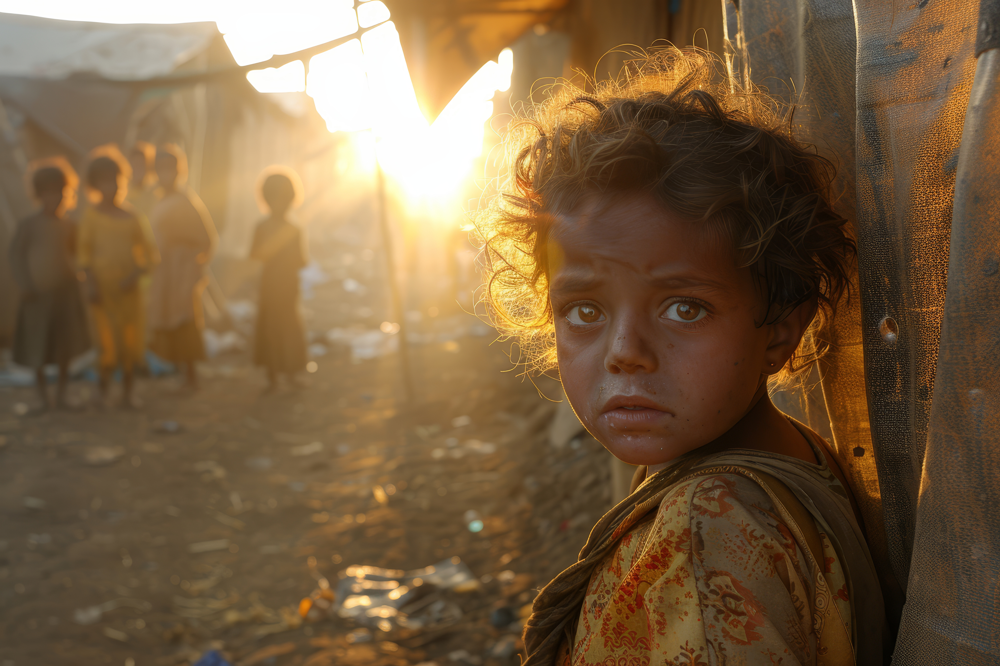

Disaster response
Assam Flood Relief Fund
Support families with emergency shelter, clean water, and essential supplies after floods.
Give to this fund
A clearer way to give
A donation should be the start of a story you can follow. Explore a simple, transparent record of every contribution in one place.
The idea
Trust grows when the details are out in the open. Public Relief is a project exploring how a shared donation ledger can make giving feel a little more connected.
Get to know usWhere help can go
Disaster response
Support families with emergency shelter, clean water, and essential supplies after floods.
Give to this fund
Food security
Help provide nutritious meals, hygiene kits, and everyday essentials to families in need.
Give to this fund
Learning & opportunity
Help girls access learning materials, school supplies, and opportunities to thrive.
Give to this fundThese are fictional demonstration funds. Public Relief is a prototype and does not distribute funds.
The public record
Browse the latest entries in the demonstration donation ledger.
Small acts, shared openly